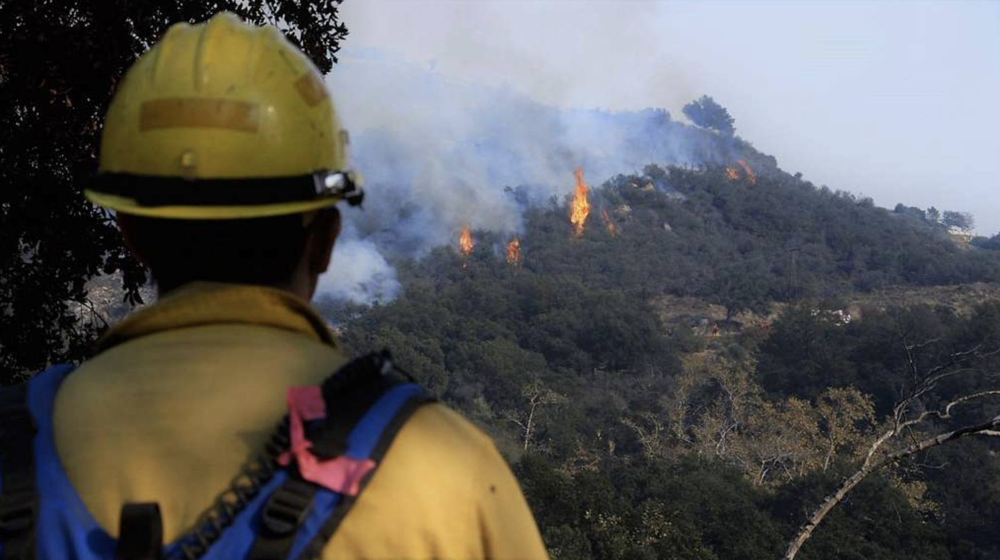

Assignment 4
The total grade of the assignment will be divided in this way:
- 20% - Task 1
- 70% - Task 2, sections 2-6
- 10% - Task 2, section 7
Submission instructions
Task 1: The politics of pixels reading
When working with satellite data, it’s easy to assume that it is inherently objective and equally accessible to everyone. However, Bennett et al., in their paper The Politics of Pixels: A Review and Agenda for Critical Remote Sensing (2022 [1]), challenge this assumption, arguing that remote sensing needs a critical lens. They emphasize that various sociopolitical factors influence who collects remotely sensed data, how it’s collected, and ultimately, who benefits from its insights. This reading will encourage you to explore the biases and inequalities that can be embedded in remote sensing technologies and practices.

Read the paper and write a one-paragraph (between 100 and 150 words) reflection about it. This paper is a bit denser than the others we’ve read, section V is worth special attention. Review the rubric for this assignment here. Answer at least one of the following questions for your reflection:
Reflecting on your personal or professional background, how might sociopolitical factors shape the availability and interpretation of satellite and other remotely sensed data for communities or organizations you’re familiar with?
What potential ethical responsibilities arise for environmental data scientists when working with remote sensing data that may carry biases or limitations?
If you were tasked with implementing remote sensing for a project, what steps might you take to ensure the data collected is fair, accessible, and unbiased?
Task 2: Visualizing fire scars through false color
The Thomas Fire, which burned over 280,000 acres in Ventura and Santa Barbara counties in December 2017, was one of California’s largest wildfires at the time. It caused widespread ecological damage, displaced communities, and left lasting environmental impacts.
False color imagery, created using satellite data from instruments like Landsat, is a useful tool for monitoring wildfire impacts. By assigning infrared bands to visible colors, these images highlight vegetation health, burn severity, and the extent of fire scars. This approach helps researchers and land managers assess recovery efforts, identify high-risk areas, and plan restoration strategies.
In this task, you will create a false color image of the Thomas Fire using remote sensing data, highlighting the fire scar and exploring how coding and data visualization support environmental monitoring.

About the data
In this task you will use two datsets. The first is a simplified collection of bands (red, green, blue, near-infrared and shortwave infrared) from the Landsat Collection 2 Level-2 atmosperically corrected surface reflectance data, collected by the Landsat 8 satellite.
The data was retrieved from the Microsof Planetary Computer data catalogue and pre-processed to remove data outside land and coarsen the spatial resolution. This data should be used for visualization and educational purposes only and can be accessed at this path within workbench-1:
/courses/EDS220/data/hwk4_landsat_data landsat8-2018-01-26-sb-simplified.ncThe second dataset will be historical open-access data about fire perimeters in California. There are several datasets with this information online. You will need to select one from a reputable source that includes the fire perimeter of the Thomas Fire during 2017.
Setup
Instructions
1. Reading
Read the following resources about false color images and Landsat imagery:
2. Fire perimeter data retrieval and selection
Explore the data and write a brief summary of the information you obtained from the preliminary information. Your summary should include the CRS of the data and whether this is projected or geographic.
From your fire perimeter data, select the Thomas Fire boundary. The fire occurred in 2017.
Save only the 2017 Thomas Fire boundary as a geospatial file in the format of your choosing. The file should go into the
data/directory in your repository.In a markdown cell, briefly explain your reasoning for selecting that specific file format.
3. True color image
Construct a file path to the Landsat data using
osand import it usingrioxr.open_rasterio().Explore the data and write a brief summary of the information you obtained from the preliminary information. Your summary should include the a description of the data’s variables and dimensions.
Drop the
banddimension of the data. HINT:squeeze()anddrop_vars().Without creating any new variables:
- select the red, green, and blue variables (in that order) of the
xarray.Datasetholding the Landsat data, - convert it to a
numpy.arrayusing theto_array()method, and then - use
.plot.imshow()to create an RGB image with the data. There will be a warning, that’s ok.
Adjust the scale used for plotting the bands to get a true color image. HINT: Check the
robustparameter. The issue here is the clouds: their RGB values are outliers and cause the other values to be squished when plotting.In a markdown cell write a brief explanation comparing the ouputs for parts (d) and (e).
4. False color image
Without creating any new variables, create a false color image by plotting the short-wave infrared (swir22), near-infrared, and red variables (in that order).
5. Map
Create a map showing the shortwave infrared/near-infrared/red false color image together with the Thomas Fire perimeter. Customize it appropriately including, at least, an informative title and legend.
Write a figure description for the map including a brief explanation of how false color imagery is being used.
6. Clean your notebooks
The target audience for your notebooks is a fellow EDS 220 student who is just learning about wrangling raster data using Python.
- Add enough and appropriate comments to explain your code.
- Add enough and appropriate markdown cells to explain the procedures you are using and their output.
- First cell in the notebook must be a markdown cell including:
- Each notebook must include an “About” section with the following subsections:
The rest of your notebook should be organized into logical subsections (indicated through markdown headers) for the analysis and visualization you are performing. The subsections should easily guide the reader through the analysis.
7. Update your repository
Update your repository’s README with (at least) the following (based on EDS 296):